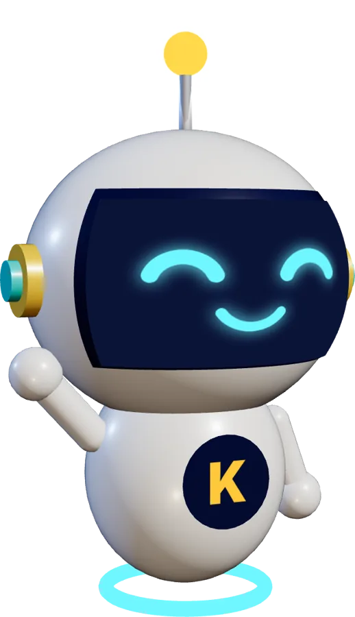
Ben Kaşifya 👋
Fen dersinde keşif zamanı
Akıllı tahtada bütün sınıfla kullanılan, ücretsiz bir fen uygulaması: 3B deneyler, sınıf oyunları ve kazanım takibi.
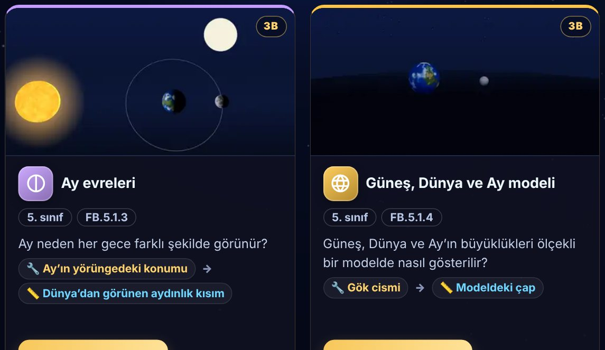
Deneyi tahtada birlikte yapın
Her deney bir kazanıma bağlı ve aynı yolu izler:
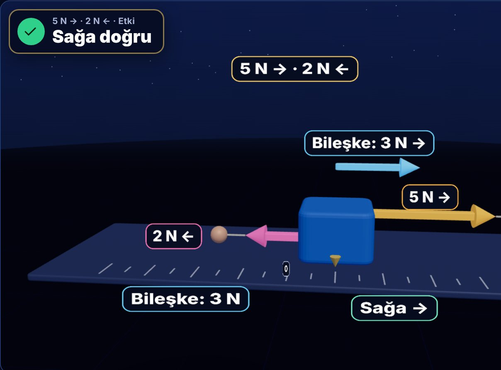
Neyi değiştirdik, neyi ölçtük?
Bağımsız, bağımlı ve kontrol değişkenleri hep gözünüzün önünde. Her ölçüm büyük yazıyla; tablo ve grafik kendiliğinden oluşur. Yazılar 5 metreden okunur.
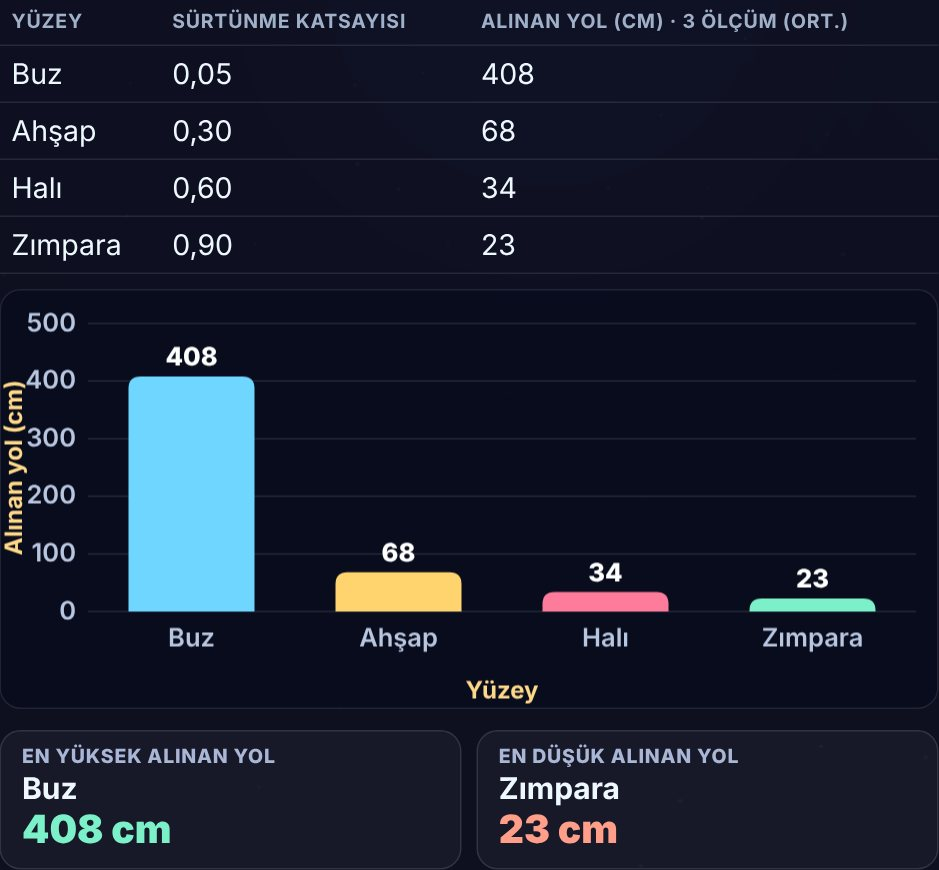
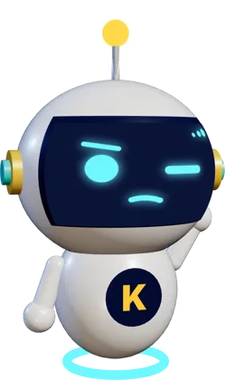
Veriler ne söylüyor?
Kaşifya sonucu söylemez; tahmini, tabloyu ve grafiği yan yana koyar. Sınıfça konuşur, iddia-kanıt-gerekçe ile toparlarsınız.
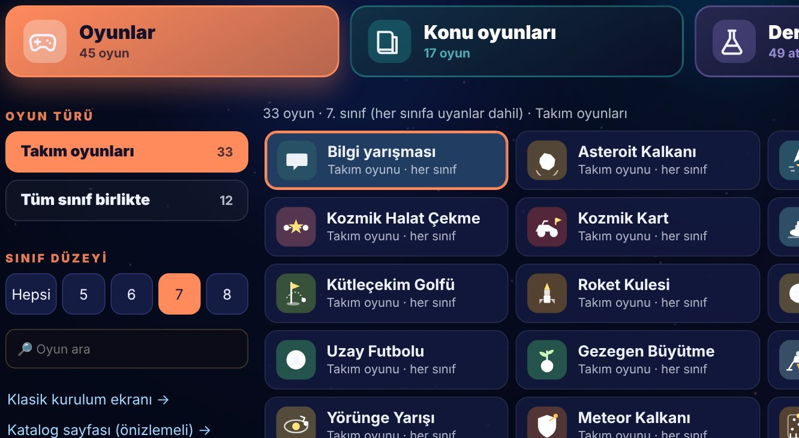
Herkes kartını kaldırır
Öğrenciler A-B-C-D kartlarıyla cevap verir, siz çoğunluğu tek dokunuşla girersiniz. Kart Stüdyosu'nda öğrenciler kendi kartını tasarlar.
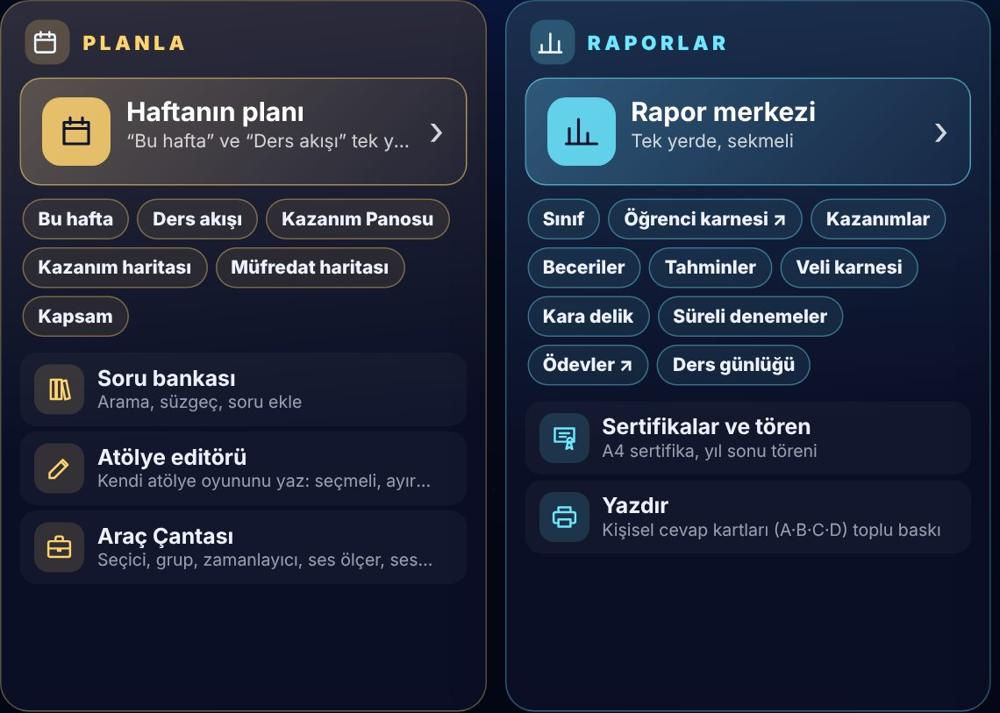
Bu hafta tek ekranda
5·6·7·8. sınıfların haftalık kazanımı, zorlanılan konular, beceri raporu ve LGS tekrarı. Öğretmen modu PIN ile korunur.
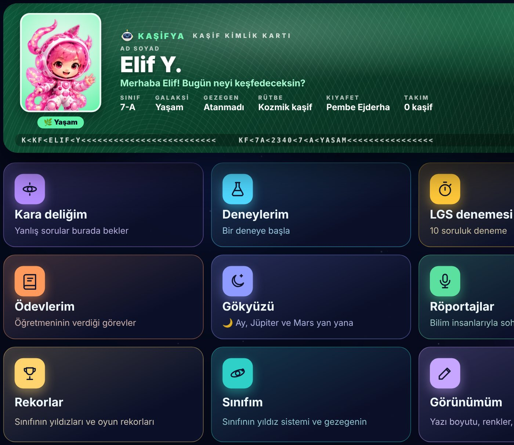
Her öğrenciye kendi Kaşif üssü
Kaşif kodu ve 4 haneli şifreyle girer: kimlik kartı, deneyleri, kara deliği, ödevleri ve sınıfının rekorları. Koloni günü sınıfıyla üssünü kurar.
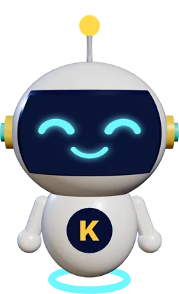
🔒Veriler tahtadan çıkmaz
- Sunucu yok, hesap yok, reklam yok
- Ağ kilidi dışarıya veri gönderen her isteği durdurur
- Öğrenciler “Ahmet A.” gibi kısaltılmış adla kaydedilir
kuruluyor!
Kaşifya cebinizde
- Flash bellekte Kaşifya klasörü açın, indirdiğiniz kasifya.html'i içine koyun.
- Dosyayı tahtada Chrome ile açın.
- “Verilerim flash bellekte”ye dokunup aynı klasörü seçin. Her değişiklik oraya kaydedilir.
Güncellemede yeni dosyayı eskisinin üstüne kopyalayın; verileriniz silinmez. Ayrıntılı kurulum
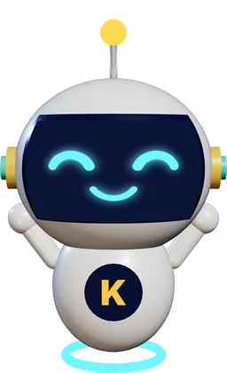
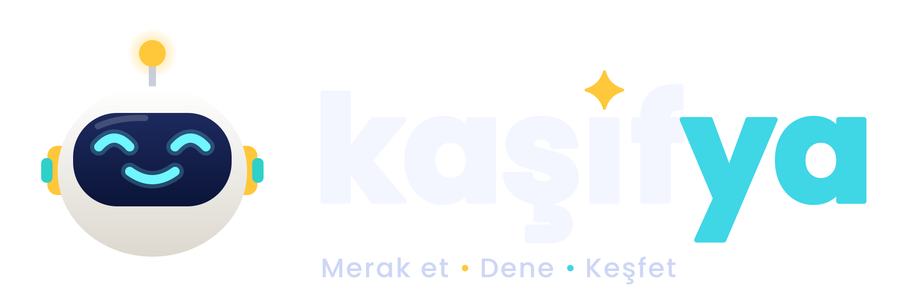
Hadi başlayalım!
© 2026 TK · Kaşifya. Öğretmenler ücretsiz kullanabilir; izinsiz kopyalanamaz ve dağıtılamaz. Kullanım koşulları · Veri ve KVKK · Tüm özellikler